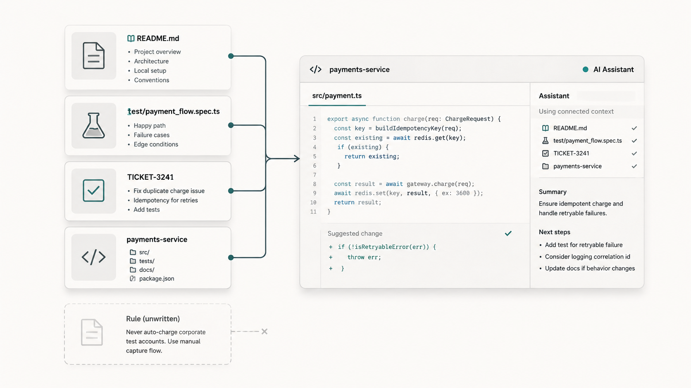
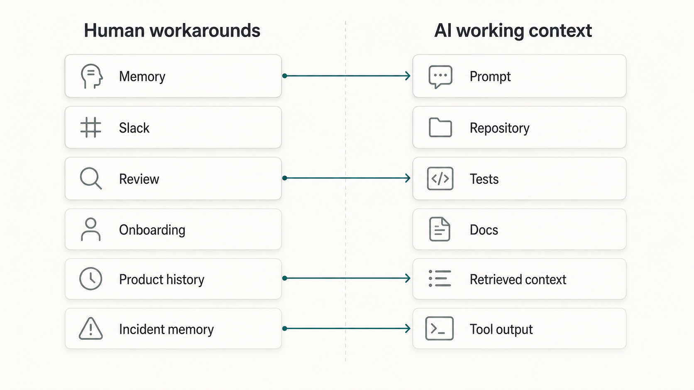
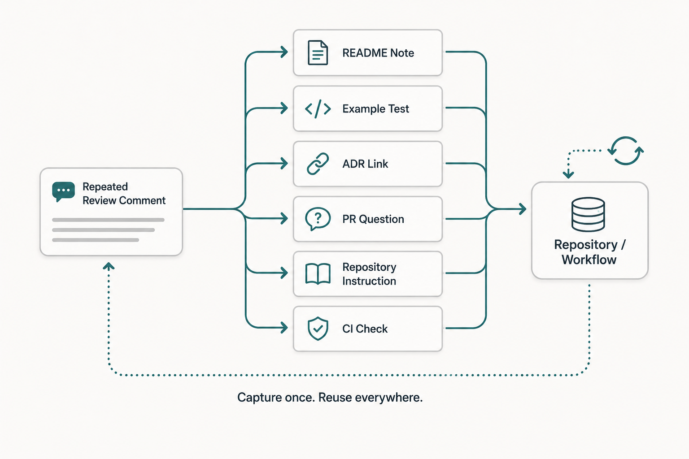

The assistant cannot use the rule your team only explains in review.
The README says the service supports account cancellation. The tests show the normal path: active account, valid request, cancellation recorded, confirmation sent. The code has a clear handler, a service method, and examples that look easy to follow.
What the repository does not say is that enterprise accounts follow a different rule. They need a contract check before cancellation. Everyone on the team knows this because it came from an old customer escalation. Senior developers remember it. Support remembers it. Product remembers it.
But the rule never made it into the README, the ticket template, the test examples, or the service instructions.
Now ask an AI assistant to make "one small cancellation improvement."
It will probably follow the visible system.
That is the problem.
Tribal knowledge has always been expensive in software teams. AI-assisted development makes the cost harder to hide.
What tribal knowledge really is
Tribal knowledge is practical team knowledge that the software depends on but the team has not put in a durable, findable, current place.
It is not mysterious wisdom. It is usually ordinary delivery knowledge:
- do not call this provider during checkout
- this old endpoint is still public, but no new clients should use it
- trial accounts skip this workflow
- enterprise accounts do not
- this test helper hides a real authorization behavior
- this table looks local, but operations depends on it
- that retry policy changed after an incident
- this module boundary matters even though imports still compile
Human teams survive this for a while because people create social shortcuts around the missing record.
A new developer asks in chat. A reviewer notices the missing case. A senior engineer remembers the outage. A product manager explains the contract exception. Someone says, "Before you touch that part, talk to the platform team."
These workarounds are useful. They are also fragile.
They depend on who is available, who remembers, who reviews the change, and whether the question gets asked at all.
AI assistants do not get that social layer by default. They work from the context assembled for the task: the prompt, selected files, nearby code, tests, retrieved documents, repository instructions, terminal output, and connected tools.

If the important rule is only in someone's memory, the assistant cannot reliably use it. If the rule is in a stale wiki page, the assistant may use the wrong version. If the rule appears only in old review comments, the assistant may miss it completely.
DORA's guidance on AI-accessible internal data makes this point in practical terms: AI tools become more useful when they can work with relevant internal context such as codebases, documentation, style guides, operational metrics, and architecture diagrams. The hard edge is simple: missing or inaccurate internal context produces weak assistance.
Humans can ask around. AI extends what it sees.
Experienced developers read more than files.
They read team history. They know which old pattern is tolerated but no longer preferred. They know the shortcut that works in one service but caused trouble in another. They know which "simple" change usually needs a product decision. They know that a certain test fixture exists for historical reasons and should not be copied.
AI can infer some things from code and tests. Sometimes that is enough. But it cannot reliably infer the rule that the team never captured and never connected to the work.
This difference matters because AI is good at continuing visible patterns.
If the repository contains three old examples and no current guidance, the assistant may copy the old examples. If the tests only show the normal path, it may write more normal-path tests. If the ticket describes the happy path but omits the contract exception, the assistant may implement exactly what the ticket says.
The assistant is not necessarily being careless.
It is treating the available evidence as the system.
That is why tribal knowledge becomes more expensive with AI. The output can arrive quickly, look consistent, and still miss the rule that mattered most.
Wrong implementations
The first failure mode is wrong implementation.
Suppose a team changed its API standard six months ago. New endpoints should use an asynchronous event-based flow. The decision was discussed in architecture review. A few senior engineers know the reason. One ADR exists, but it is not linked from the service. The repository still has older synchronous examples because migration is incomplete.
An assistant asked to add a similar endpoint will naturally find the old examples.
The generated code may be clean. It may pass tests. It may fit the naming style. But it implements the old standard.
A new human could make the same mistake. The difference is speed and surface polish.
Architecture Decision Records help because they preserve decision context. Martin Fowler describes an Architecture Decision Record as a short document that captures a decision, the context for making it, and its consequences. He also notes that changed decisions should link to superseding decisions.
That matters because old decisions and old code remain visible. Unless current decisions are connected to the work, AI may faithfully implement yesterday's architecture.
Missed edge cases
Tribal knowledge also hides in edge cases.
The ticket says "support cancellation." The acceptance criteria mention the normal customer flow. The existing tests cover a valid request, an invalid request, and a database failure.
What is missing?
Enterprise accounts need contract review. Suspended accounts need a different message. Accounts with pending invoices follow a separate workflow. One region requires an audit event. Old records contain account states the current UI cannot create.
These details come from incidents, support cases, customer contracts, and product history. Teams often carry them in memory because they were learned under pressure and never folded back into normal engineering artifacts.
AI assistants do not know that history unless it appears in the task context. If the edge case is not in the ticket, examples, tests, docs, or retrieved guidance, the assistant may produce a complete-looking implementation that handles only the visible path.
This is where AI exposes weak written work.
It shows the difference between what the team meant and what the team actually gave the system.
Weak tests
AI-generated tests can be helpful, but they usually reflect the same knowledge as the implementation.
If the repository shows happy-path tests, the assistant writes more happy-path tests. If the test helper hides authorization, it may reuse the helper. If no example covers idempotency, retries, stale data, or customer-specific rules, the generated tests may miss the risky behavior.
The tests can still look good.
They can have clear names. They can arrange data cleanly. They can assert the expected response. They can pass in CI.
But passing tests are only useful if they test the behavior that matters.
When reviewers repeatedly say "add the enterprise case" or "test the retry boundary," that is not just a review comment. It is a signal that knowledge is stuck in human memory.
The documentation chapter in Software Engineering at Google gives a useful rule of thumb: if something needs to be explained more than once, it usually makes sense to document it. For AI-assisted development, the same idea extends beyond prose. If the same correction appears twice, consider whether it should become a test, example, checklist, repository instruction, or CI check.
Misleading confidence
The most dangerous failure is not messy output.
Messy output is easy to distrust.
The harder case is polished output built on incomplete context.
An assistant can produce code that compiles, tests that pass, and a summary that sounds careful. It can say it added coverage for cancellation. It can say it followed existing patterns. It can say all tests pass.
All of that may be true.
It still may have missed the rule that was never connected to the work.
This creates misleading confidence. The team sees progress. The pull request looks reasonable. The generated explanation sounds complete. The missing knowledge is outside the artifact, so it is easy to miss until review or production.
That is why review has to look beyond code cleanliness.
Reviewers should ask:
- What local rule should have shaped this change?
- Did the assistant copy a current pattern or an old one?
- Are the edge cases visible in the ticket and tests?
- Would a new developer find the same rule from the repository?
- Is this the second or third time we have explained the same thing?
These are not special AI questions. They are good engineering questions that AI makes harder to postpone.
Documentation is not the whole answer
The answer is not "document everything."
That usually creates a second problem: stale documents, long pages nobody reads, and search results full of conflicting guidance.
Useful context is smaller and closer to work.
DORA's work on documentation quality emphasizes attributes such as clarity, findability, and reliability. That is the right direction. A short, current note next to the code is often better than a long page in a forgotten wiki.
Some tribal knowledge should become documentation. Some should become examples. Some should become tests. Some should become an ADR. Some should become a PR checklist item. Some should become a linter, schema check, or CI gate. Some should remain human judgment, but with clearer ownership.
Use a simple model.
1. Spot repeated explanations
Look for rules people keep explaining during onboarding, code review, incident follow-up, ticket clarification, or senior-engineer escalation.
Repeated explanation is a smell. It means the knowledge matters and the workflow has no good place for it.
2. Capture the rule close to the work
Do not start with a large knowledge base.
Put the rule where the next person or assistant will need it.

If it affects a module, link the ADR from that module. If it affects tests, add a test example. If it affects a service, update the README. If it affects every PR of a certain type, add a template question. If it affects generated code, put it in repository instructions.
The goal is not perfect documentation. The goal is reachability.
3. Convert stable rules into stronger artifacts
Some knowledge should not remain a paragraph forever.
If a rule is stable, repeatable, and cheap to check, move it into something stronger:
- a unit or contract test
- a lint rule
- a schema constraint
- a generated example
- a PR checklist item
- an architecture boundary check
- a CI step
This reduces dependence on memory.
It also helps AI because the correct path becomes visible in the repository and feedback loop.
4. Feed review and incidents back into context
Review comments and incidents are not only corrections. They are discovery mechanisms.
When an AI-assisted change misses a local rule, fix the change. Then ask where that rule should have lived.
Was the ticket too thin? Was the README stale? Was the ADR unlinked? Was the test example missing? Was the old pattern still present without a warning? Was the assistant blocked from the right source? Was retrieval noisy?
Every miss is not a context failure. Sometimes the model simply gets it wrong.
But repeated misses usually point to a knowledge-flow problem.
Limits
Some knowledge is hard to capture.
Experienced engineers carry judgment from production incidents, failed designs, customer history, and trade-offs. Not all of that can become a checklist.
Some knowledge is sensitive. Customer details, security incidents, commercial terms, and operational data need access control. DORA's guidance on healthy data ecosystems is useful here because it pairs discoverability with governance. AI tools should not receive everything just because context is useful.
Some documentation will become stale. That is why ownership matters. A stale rule can be worse than no rule because it gives both humans and assistants the wrong thing to trust.
And some AI mistakes will happen even with good context.
Better knowledge flow reduces risk. It does not remove review, testing, architecture judgment, security review, or production ownership.
Three practical takeaways
First, treat tribal knowledge as AI risk when it affects implementation, testing, rollout, security, or production behavior.
Second, use AI mistakes as diagnostics. Ask whether the assistant had a realistic way to know the rule it missed.
Third, move repeated explanations closer to the workflow. The right artifact might be a README note, test, ADR link, PR question, repository instruction, or check.
The next repeated explanation
The next time you explain the same rule in review, pause for a moment.
Do not only leave the comment.
Ask where that rule should live so the next developer can find it earlier and the next assistant can use it as context.
Maybe the answer is a sentence in a README. Maybe it is an example test. Maybe it is an ADR link. Maybe it is a PR template question. Maybe it is a small CI check.
That small habit matters.
Tribal knowledge becomes expensive when important rules have no path into the work. AI makes that cost visible because it operates on the system your team has actually captured, not the system people remember.
If the knowledge matters, give it a home close to the work.